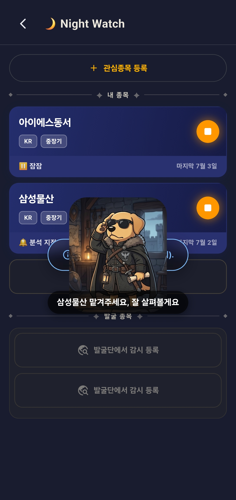
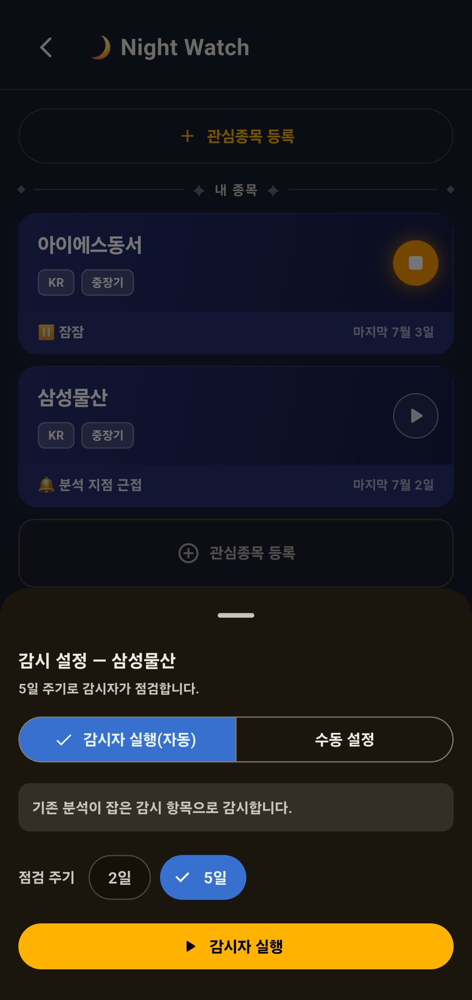
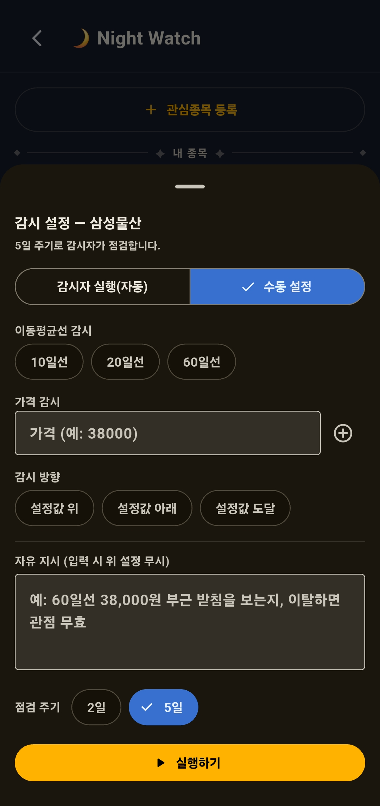
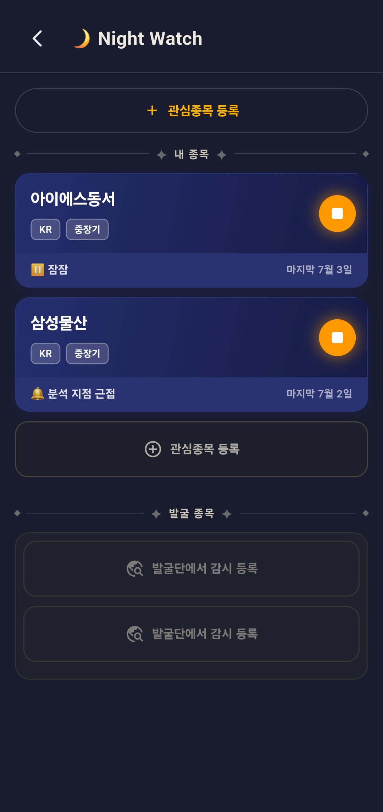

← 포핏플레이 목차
Pawfit! 포핏!!
🌙 Night Watch
관심종목을 포핏 감시단에게 맡겨요 🐾
관심 있던 종목, 그냥 지나쳐서 잊어버릴 때 많으시죠? 이제 포핏에게 맡겨보세요. 감시를 요청해두면 포핏 감시단이 주기적으로 살펴보고 보고해요 — 내가 정한 지점에 다다르면 콕 짚어 알려줘요.

종목을 맡기면 — 포핏 감시단이 대신 지켜봐요
감시 설정 방법
내가 고른 종목을 감시로 맡기기까지 세 걸음이에요.
- 관심종목 등록 — 위 ＋ 관심종목 등록에서 지켜보고 싶은 종목을 검색해 등록해요.
- 먼저 한 번 살펴보기 — 감시를 걸려면 그 종목을 한 번 살펴봐야 해요. 분석을 누르면 포핏이 종목 현황(개요·재무·수급 흐름)을 정리해줘요.
- 감시 맡기기 — 이제 감시를 걸어두면, 감시단이 주기마다 살펴보고 정한 지점에서 알려줘요.
⚠️ 살펴보기(분석)는 참고만 하세요. 포핏이 정리한 내용은 AI가 만든 참고 자료라 부정확하거나 틀릴 수 있어요. 특정 종목을 추천하는 게 절대 아니에요 — 감시를 걸기 위해 종목을 한번 훑어보는 참고일 뿐이에요. 투자 판단은 반드시 스스로 확인하세요.
감시는 두 가지 방식으로
🤖 감시단에게 맡기기(자동)
포핏이 알아서 잡은 지점으로 지켜봐요. 간편하게.
✋ 직접 정하기(수동)
이동평균선(10·20·60일선), 가격 + 방향(위·아래·도달), 자유 지시까지 직접.
그리고 점검 주기를 종목 특성에 맞게 2일 또는 5일로 골라요.

자동 — 감시단에게 그냥 맡기기

수동 — 이동평균선·가격·방향·자유 지시를 직접
목록 — 내 종목과 발굴 종목
목록은 어디서 온 종목이냐에 따라 두 구역이에요.
위 — 내 종목
나이트워치에서 직접 검색해 등록한 종목이에요.
아래 — 발굴 종목
포핏의 랜덤 리서치에서 뽑은 종목을 감시로 넘긴 자리예요. 여기서도 감시 설정을 똑같이 할 수 있어요. (랜덤 리서치는 따로 안내해요.)

위 "내 종목" · 아래 "발굴 종목" 두 구역
카드는 이런 상태를 보여줘요
⏸ 잠잠감시를 쉬는 중 (아직 시작 안 함/멈춤)
🔔 분석 지점 근접정한 지점에 곧 다다를 것 같을 때
▶ / ■ 버튼감시 시작 / 감시 중(멈추기)
마지막 N월 N일감시단이 가장 최근 살펴본 날
알아두면 좋은 한도
👀 감시는 마음껏
등록해 둔 종목은 정한 주기(2·5일)대로, 자동이든 수동이든 계속 지켜봐요. 감시 자체는 제한이 없어요.
🎯 감시 자리는 모두 4개
내 종목 2개 + 발굴 종목 2개. 자리가 차면 하나 지우고 새로 등록해요.
🔎 살펴보기(분석)는 일주일 2번
새로 등록하든 다시 살펴보든 — 살펴보기 자체는 합쳐서 7일 2회예요. (감시는 이와 무관하게 계속돼요.)